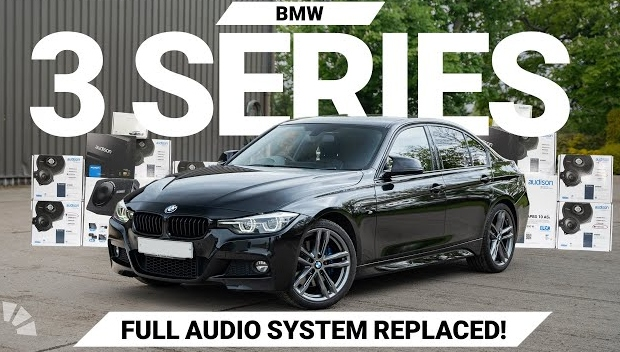

Nuestros Proyectos Recientes

Mustang GT - Edición Especial BULLITT
- Descripción: Esta edición especial del Mustang GT ha sido completamente transformada, inspirada en la famosa película Bullitt. La pintura verde oscuro, junto con los detalles en negro mate, le dan un aspecto inconfundible. El motor ha sido optimizado para ofrecer un rendimiento superior, y el interior ha sido modificado con materiales premium para mayor confort.
- Detalles adicionales:
- Motor: V8 5.0L mejorado
- Pintura personalizada en color verde Bullitt
- Asientos de cuero de alta gama
- Suspensión deportiva ajustable
- Detalles en fibra de carbono
- Este proyecto fue diseñado para quienes buscan algo único, que combine la potencia y la estética de un ícono del cine con un toque personal que lo haga aún más especial.

BMW Serie 3 - Sound Upgrade
- Descripción: Este BMW Serie 3 fue transformado no solo en términos de estética, sino también de rendimiento acústico. Instalamos un sistema de sonido de alta gama, con altavoces personalizados y un subwoofer que proporciona una calidad de audio excepcional. Además, se realizaron ajustes en la insonorización para lograr una experiencia de sonido envolvente.
- Detalles adicionales:
- Sistema de sonido Alpine de 12 altavoces
- Subwoofer Focal para graves profundos
- Insonorización total del habitáculo
- Mejoras en la conectividad con sistema de control por voz
- Este proyecto es ideal para los amantes de la música que buscan la mejor calidad de sonido mientras disfrutan de la conducción de un vehículo de lujo.

Audi RS5 - Personalización Total
- Descripción: El Audi RS5 es una máquina poderosa, pero con este proyecto buscamos mejorar tanto su estética como su rendimiento. Se instalaron mejoras en la suspensión, frenos de alto rendimiento y un sistema de escape modificado para un sonido más agresivo. El exterior se personalizó con vinilos y detalles en color mate, mientras que el interior fue transformado con asientos deportivos y materiales de calidad superior.
- Detalles adicionales:
- Suspensión deportiva KW
- Frenos de carbono-cerámica
- Escape personalizado para sonido profundo
- Vinilos exclusivos en el exterior
- Asientos de competición Recaro
- Este proyecto llevó al Audi RS5 a un nivel completamente nuevo, manteniendo su esencia de deportivo pero con un toque único y agresivo.
Chevrolet Camaro - Tuning Completo
- Descripción: En este Camaro se hizo un tuning completo, desde el motor hasta los detalles estéticos. Se incorporaron mejoras en el rendimiento del motor con una nueva ECU, además de un sistema de suspensión ajustable para mejorar la estabilidad. El exterior se personalizó con un body kit agresivo y una pintura exclusiva en tonos oscuros, mientras que el interior recibió detalles deportivos y tecnología avanzada.
- Detalles adicionales:
- Motor: Optimización del turbo y ECU personalizada
- Suspensión ajustable Bilstein
- Body kit en fibra de carbono
- Pintura mate con detalles en rojo
- Interior con detalles en Alcantara
- El resultado es un vehículo que no solo se ve impresionante, sino que también ofrece una experiencia de conducción mejorada y una estética agresiva.